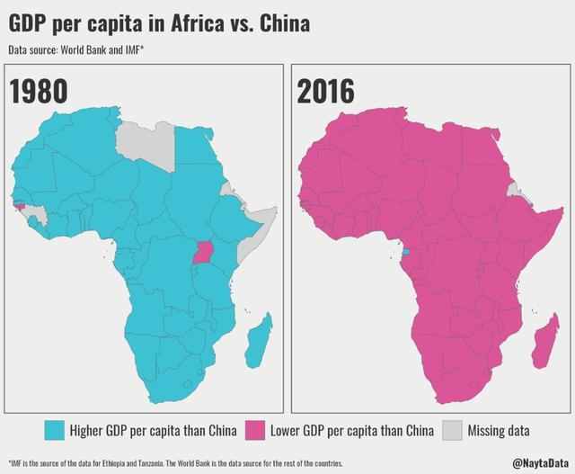
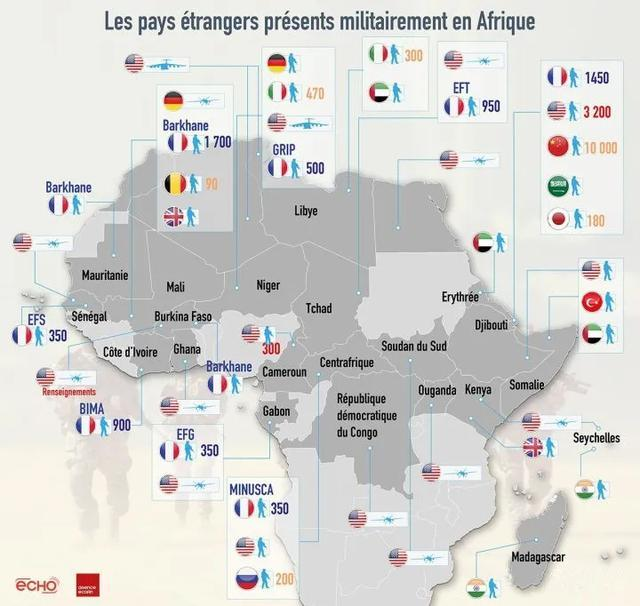
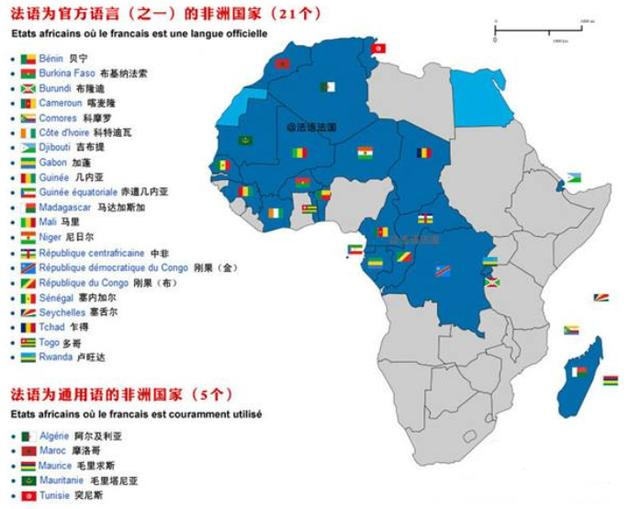
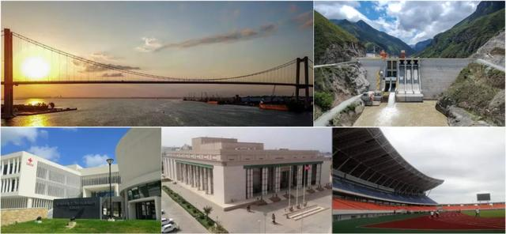
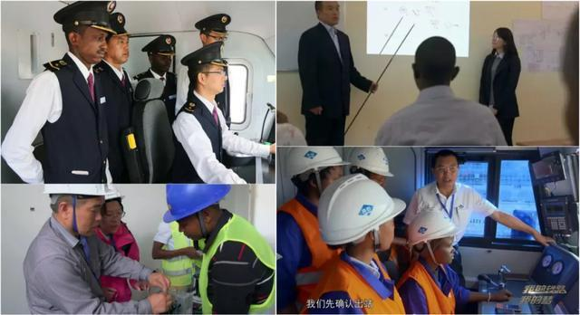

援助非洲给中国带来了什么？
作者：智先生 - 知乎
互联网有许多热点议题，其中一个是：我们每年援助非洲那么多资源，到底换来了什么？
衍生出来的问题是：我们援助非洲的钱，为什么不能拿来支援西部贫困地区？一部分人认为，援助非洲是花钱做慈善，赚个吆喝，冤大头行为；一部分人知道里面或许有战略意义，但没有一个清晰概念，比较模糊；还有一部分人，只要谈及「非洲黑人」，就归为懒和穷，非我族类，不值得任何援助。
有不同立场，和不同观念。基于此，是我写下这篇文章的原因。
1 几个大陆的不同历史
历史上的非洲，先后诞生了几个强盛王朝。有加纳帝国，有马里帝国，也有桑海帝国。其中建立于14世纪的桑海帝国，是西非历史上最大的王朝，它的面积堪比欧洲，代表着古非洲文明的辉煌。
但也就这样了。
纵观非洲几千年历史，璀璨文明真的屈指可数，大部分地区，仍然处于打猎、采摘野果的原始生活。只因为非洲的自然环境，远比我们想象得要优越。除了撒哈拉沙漠，其它地区全年气候适宜，降雨频繁，没有凛冬，无需御寒。森林草原连绵不绝、动物种类繁多，千姿百态，几乎没有什么生存压力。既然随便挖个洞都能逮到猎物，何必再辛苦开垦土地，去圈养家禽家畜？这间接导致了，非洲多懒人，生活太安逸了。
同时期的亚欧大陆，则是另一番景象。
在亚洲，因为自然条件远比不上非洲，而且还要面临寒冬威胁，人民只能辛勤工作，储备粮食过冬，还要提防高寒地区游牧民族的袭击。为了更高效地生产粮食，就要制定历法节令，升级农务器具；为了生产棉衣，就要懂得筛选棉种，纺织工具更新迭代，研发纺车、织机等。社会发展起来后，为了更好地管理百姓，就需要政权、司法和军队，来维系一个国家运转。于是，诞生了许多辉煌古代文明。
欧洲的自然条件，比起亚洲板块，就更差了。地形支离破碎，被山脉分割，岛屿众多，小邦小国拥挤不堪，彼此竞争激烈。于是，在15世纪新航路开辟后，欧洲走上了海外殖民道路，开拓新市场。
倘若能给非洲大陆一个相当长的安逸时间，或许这片土地还会诞生许多璀璨国家。只可惜，欧洲人没给这个机会。他们冲进非洲大陆后，开始了血腥的资源掠夺。由于黑人数量众多，又能适应热带气候，于是欧洲人把黑人当成交易商品，把他们贩卖到美洲充当奴隶。长达400年的奴役，使非洲损失了一亿人口。而非洲，再也没有强盛国家出现。一旦落后，就是全面落后。
2 地缘政治与经济发展机遇
到了近代，尤其是二战结束后，同样有被侵略、被殖民的历史，为何东亚各国能腾飞，而非洲（大部分国家）仍然无法起来？
只说非洲人懒，并不能解释一切。
原因有很多，一个很重要的点是地缘政治。
1945年，第二次世界大战结束，东亚就成为了美苏冷战前线，是真正的大国博弈场。两大阵营为了加强盟友实力，扶持东亚各国，而且是实打实援助。比如苏联援建中国的156个项目，直接奠定了新中国的工业基础。客观来讲，东亚各国有着稳定的社会环境和劳动力资源，因此发展起来较为迅速，援建更多只是助推一把。尤其是中国，能独立自主硬闯出来，真心不容易。1980年，非洲国家人均GDP，基本都高于中国。到了2016年，超过中国的却寥寥无几：

但非洲不一样。在地理位置上，它不属于美苏的对抗前沿，而且许多国家的工业基础薄弱，社会发展程度低，连被关注、被扶持的资格都没有。它们一直被打在资源输出国的层面，被贴上各种标签，比如胡椒海岸、象牙海岸和黄金海岸……科特迪瓦出产的可可，占到全世界份额的95%，但这个国家的工人，不懂得如何加工成巧克力，甚至都不知道可可豆的用途是什么。
如此，才最符合资本的利益。你只需要负责挖矿、种经济作物，最后赚点微薄人工费。至于商品的高附加值，就别想要了。通过层层剥削，许多非洲资源出口国，可能人均日收入低于1美元，对当地人的生活，可没有丝毫改善。于是，贫富差距更为严重，穷的越穷，富的越富。
3 非洲真的解放了吗？
因此，即便非洲国家在1960年后相继独立，瓦解了世界殖民体系，实现民族解放，殖民者们也只是从台前转移到幕后。
一个统一强盛的非洲大国，并不好控制，分而治之才最好掌控。只有战乱，才有各种师出有名的军事行动。地中海的殖民者揣着长枪大炮，将非洲的大小民族割裂得支离破碎，宗教和民族矛盾生生不息，局势动荡，恐怖横行。发生在1994年的卢旺达大屠杀事件，有80万人死于酝酿已久的种族斗争，却让西方媒体集体噤声。上世纪90年代至今，法国有超过25次对非洲进行武装干预，最近一次是2013年，出动士兵干预马里局势。法国还和16个法语非洲国家，签署军事合作协定，并在其中6个国家建立9个军事基地，派遣上万名士兵。

谈到「法语非洲」，需要陈述一个事实：非洲是世界上法语使用者最多的大洲，有31个非洲国家在使用非洲法语。这些法语非洲国家，虽然成功脱离了法国殖民统治，但外交和金融主权并没有独立。它们使用西非法郎，或者中非法郎，没有发钞权，一切由法国央行负责发行，一切政策由法国央行制定。

这意味着，失去货币主权后，一众非洲国家很容易被收割经济成果。最釜底抽薪的一招，是吸引非洲人才奔赴欧洲留学。因为没有语言障碍，很多非洲国家无法阻止人才外流，而肯回来的精英，又被扶植成出卖国家利益的买办阶层。从石油、矿产和象牙制品，到电信、军事和金融货币，西方国家用高技术标准来降维打击，让被殖民的非洲国家苦不堪言。
总结来看：欧美只在乎非洲国家的自然资源，至于什么工业化进程、修路建机场、培养高素质工人等吃力不讨好、回报周期很长的慈善活，自然就没兴趣了。如果连非洲国家都发展起来，民众觉醒，拒绝殖民掠夺，那还如何支撑欧洲的高福利政策呢？正如法国政坛流行的那句话：「如果没有非洲，法国就是第三世界国家。」他们希望非洲永远保持那番质朴模样，远离现代喧闹，好满足自己「救世主」拯救世间的幻想。于是，经济停滞甚至倒退，生存环境恶劣，蝗灾不断，疾病频发，贫穷饿死的人很多，病死的人更多。
选择性公布一点事实，又选择性隐瞒一点事实。这就是非洲的真相。
4 中非如何双赢？
真正想帮助非洲的国家，就只有中国。无论对非洲各国，还是对中国来说，这都是一个双赢局面。
我们需要有个清醒认识，目前无论是油气还是矿产资源，我们对国外的依存度都很高，可国际市场环境，却对我们很不友好。比如上个月（2020年5月），澳洲要停止对我国的铁矿石供应。他们的威胁底气是，我国约40%的铁矿石都来源于澳大利亚。这种言论是挺可笑，我们完全可以从南非、印度等国进口铁矿石。但如果不想一直被别人卡住脖子，不想隔三差五被威胁，不想被言而无信的国家反复制裁，那我们就要扩宽原材料供应国，并且供应国最好能亲近我们。
所以，一切都很清晰了：我们需要大量能源、矿产和其它自然资源，非洲资源丰富，都可以满足；而非洲人口众多，潜在需求大，苦于基础设施不足，社会发展迟滞，无法带动消费力。因此我们不仅卖商品给非洲国家，还要建基础设施，直接一条龙援助，推动他们的社会发展。我们要从非洲进口石油，就在当地勘探、开采、完善管道运输，到提炼、石油产品加工和储存运输，建立起一条完整的石油产业链。我们要进口矿产资源，就在当地建工厂，配套电站和水厂，并且修建铁路，用火车将矿石运输出去，还要修建港口，日后满足各种大宗商品转运。这些产业链，都需要培养大量技术工人，更要改善当地人的居住条件。于是，首先得规划员工宿舍；住所必须要有通信基站和卫星，以保证互联网和电话接入；安防领域我们在全球领先，也顺便负责了；居民的生活质量要跟上来，离不开电视电冰箱洗衣机，我们的家电物美价廉，非常适合；我们的国产手机传音，已经在非洲深耕十几年，后续的华为小米OV，也会陆续进场；至于电视节目，可以推荐我们的国产节目，增强文化输出；人员逐渐密集后，附近可以规划出一个小城，修建公路桥梁机场、酒店学校医院体育馆，政府大楼也顺便建了，来个打包价。

我们就是等，等到他们国家发展起来，掌握了一定财富，有了一定消费能力，而且对我们商品产生信任和依赖，一切就都成了。这是一个将近13亿人口的新市场，我们不必再担心欧美的各种资源制裁。
既解决了我们的产能过剩问题，拉动就业，增加外需，还肩负着另一个重任：输出中国标准。三流企业做产品，二流企业做品牌，一流企业做标准。中国在非洲援建的项目，无论施工材料、工程队培训、电器网标准、运营流程，还是日后的升级配套设施，都要按照中国标准来。也只有如此，才能提升中国标准的国际地位，才能深入人心。我们目前包揽了世界40%的电信基础设施市场，华为更是5G标准的全球主导者之一。如果华为能抢下非洲大部分4G和5G市场，有稳定的市场输血，那美国的围追堵截，也就不攻而破了。
是的，把握住非洲市场，就等于打破欧美封锁。打破封锁，才有广阔天地。
5 援助非洲、支援西部齐头并进
我们援助非洲，和支援西部一点都不矛盾。
从九十年代开始，中国一直在建设西部，用的钱是国内税收。
而援助非洲，用的是外汇储备（美元），不能在国内使用，会造成通货膨胀。与其用这些外汇购买美国国债，被「美元环流」，还不如拿来援建非洲更为实际。中国给非洲的贷款，大部分用于基建类，而且直接将钱打给中国工程承包商，用于投资建厂，而且各项建材采购，非洲国家也只能找中国购买。
6 为非洲造血
我们的援助不附带政治条件，更不干涉他国内政。如果经济能力紧张，就以矿石、港口作为抵押，比如50年的港口使用权。
就以肯尼亚为例。以前全国仅有一条铁路，还是英国100年前为了运送物资修建的，年货运量只有100吨，如今已经破旧不堪。英国是不会帮肯尼亚翻新铁路、或者修建一条新的，因为没有利益可图。到了2009年，中国路桥公司和肯尼亚合作，修建了一条从蒙巴萨到内罗毕的标准中国轨距铁路。
对肯尼亚的直接好处是：铁路建设期间，一共建了79座桥梁，33个车站，480公里铁路，同时培训了1122名肯尼亚技术管理人员，转移了123个技术工种。铁路通车后，由以前的十几小时，缩减到4小时，并承担起乌干达、卢旺达、布隆迪、刚果和南苏丹等国的进出口货物运输项目。对肯尼亚每年的经济增长贡献，达到了1.5%. 这个数字很惊人了，还仅仅只是一条铁路。如今，蒙内铁路现有肯方员工2525人，中方员工676人，有1072名肯方员工可以独立完成58个作业项目。
这就是一带一路，这就是中非人民大团结。

西方媒体一直批评中国的援助方式，认为我们的对外优惠贷款，对非洲经济没有什么贡献。甚至称中国这一模式是「武器、石油、肮脏的交易」，夺取非洲资源，是新殖民主义，把西方从非洲排挤出去。许多中国威胁论的报道，就此而来。我想起一句熟悉的话：「如若敌人起劲反对我们，把我们说得一塌糊涂，一无是处，那就证明我们的工作很有成绩了。」
7 奋进发展的梦想终将实现
数百年来，没有谁真正在乎过非洲百姓。他们自身也看不到什么希望，这样的日子，一眼能望到头，每天苟活，等救世主歌颂，等志愿者送吃的。因为没有计划生育，所以每个家庭都有无数孩子，营养跟不上，发育迟钝，死亡率高；因为没有井水和净水设施，所以每天要跑去几公里外的河边打水，和毒蛇猛兽搏斗；因为没有手机、网络或者书籍，也没有交通，造成信息孤岛，像毛驴拉磨一样，每天在原始圈子里打转。空有满腔热血，无能无力，也就没有什么期盼。
这种感觉很痛苦——「如果没有太阳，我本可以忍受黑暗。」
可还有一个国家，是相信他们会有前途，能一起做生意。因为穷不是天生的，懒也不是天生的，没有谁生下来就愿意懒惰落后。于是，有了铁路火车，有了基站网络，有了农业工业，有了学校图书馆。原来工业，是真的能改变一切。只要踏实干活，就能过上好日子，这是中国人教会他们的道理。因为这七十年来，中国就是这么艰难走来，也是如此相信。
发展就是硬道理。哪怕脱贫需要好几代人完成，哪怕国民素质任重道远，哪怕欧美在非势力的百般阻挠，哪怕工业化还需要很长的一段路程。但我们都很有耐心。因为这是一个关于改变的故事。